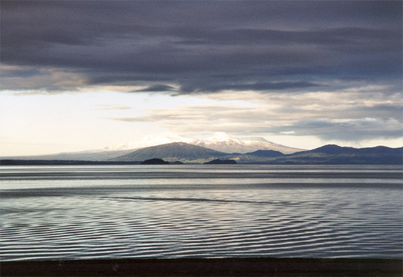
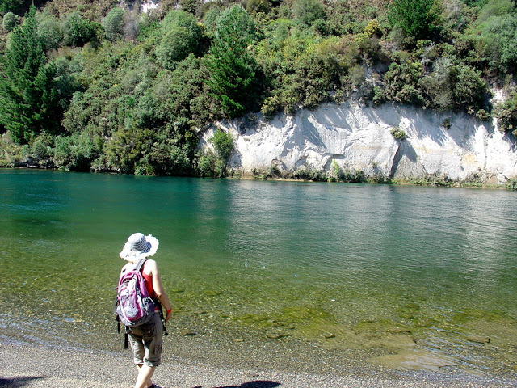

2. Озеро Таупо и водопад Хука, Северный остров, НЗ
Озеро Таупо - крупнейшее озеро Новой Зеландии и расположено в самом центре Вулканического плато Северного острова. Глубина озера достигает 160 метров, а площадь составляет более 600 квадратных километров, что практически соответствует размерам Сингапура. Недалеко от Таупо находится Национальный парк Тонгариро - горная вулканическая цепь, простирающаяся вдоль северо-востока тихоокеанского побережья, с тремя всемирно известными вулканами – Руапеху - высочайшей вершиной Северного острова высотой 2797 метров над уровнем моря, Нгарухое и Тонгариро. Это именно здесь, на склонах вулкана Раупеху и снималась знаменитая трилогия "Властелин колец", поразившая весь мир красотой пейзажей. Озеро Таупо - на самом деле, кратер огромного вулкана. На месте озера когда-то находилась высокая гора, которая была полностью уничтожена во время сильнейшего извержения в 186 году н.э. Сейчас, глядя на идеальную водную гладь озера, в это сложно поверить, однако в нем и по сей день, преобладают горячие течения. Из озера вытекает крупнейшая река страны Вайкато.
Таупо предлагает разнообразные виды отдыха: круизы по озеру, катание на скоростном катере, посещение креветочной фермы и обсерватории, сплав по горным рекам, банджи-прыжки в реку Вайкато. Особенно популярны эти места у любителей рыбной ловли - в самом озере и близлежащих горных речках в изобилии водится форель. В окрестностях Таупо можно посетить геотермальный район "Кратеры Луны", курортные комплексы с термальными бассейнами и горячими минеральными источниками, а также знаменитый водопад Хука Фоллз.

